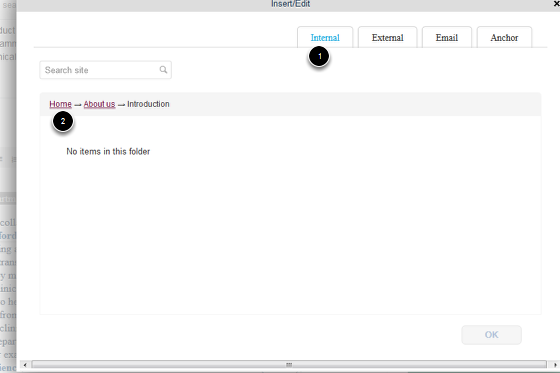

Note
these user guides are being phased out and replaced with the guides on Haiku Knowledge Base
This shows you how to create a link to another part of your website.
Go to the page where you would like to create the link and click on Edit on the toolbar at the top of the screen.
Scroll down the page until you reach the Text box. 1. Highlight the text you would like to create the link on. 2. Click on the link icon. This will bring up the link creation box.
Click on Save at the bottom of the page to save your changes.